Quartermaster's Report — All Hands
Keep this ship flying
Spokbot is free, open source, and intends to stay that way. But even starships burn dilithium: ongoing development, testing, and maintenance take real hours from real humans. Support is how this mission stays a mission instead of becoming a museum exhibit.

Standing Order — No Paywalled Crew
Sponsorships and contributions support the project's upkeep; they do not buy a different Spokbot. The code stays Apache-2.0, the features stay open, and no sponsor tier unlocks a "real" version hidden behind a viewscreen. Support is appreciated. It is never extorted. We leave that business model to the Ferengi.
Ways to Support — Choose Your Away Team
Option One
GitHub Sponsors
Recurring or one-time sponsorship of the maintainer, @jessestay, through GitHub Sponsors. The repository ships a prepared .github/FUNDING.yml so the sponsor button appears right where the code lives.
Option Two
PayPal
No GitHub account? No problem. Send a one-time contribution through PayPal — it works across most of the quadrant, in most currencies PayPal flies through. Same standing order applies: support buys momentum, never a paywalled version.
Option Three
Star & share
A star costs nothing and genuinely helps other crews find the ship. Sharing it with one Star Trek geek who also drowns in busywork is worth a full torpedo spread of advertising.
Option Four
Join the crew
Issues, documentation fixes, tests, and pull requests are all accepted aboard. Every contribution is held to the house standard: it counts when it verifies. See the ship's library for schematics.
What Support Funds
Stated plainly, in keeping with house rules: support goes toward keeping the project going — maintainer time for development and review, and the ongoing work of keeping the test suites, documentation, and releases in verified shape. There is no crew of marketers to feed. There is barely a crew. That's rather the point of the software.
And if the project ever stops being maintained, the code remains Apache-2.0 and forkable forever. Your support buys momentum, never lock-in — ours or yours.